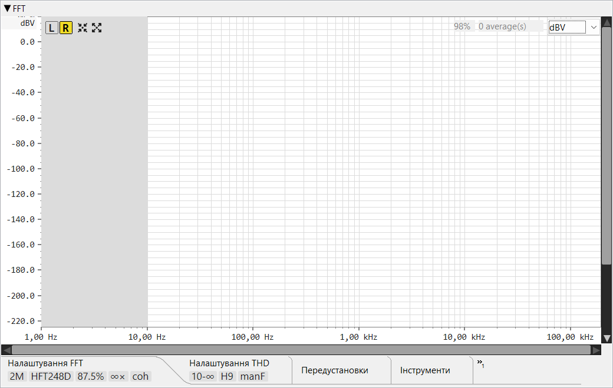

Ця сторінка описує елементи керування FFT аналізатора. Про принципи вимірювання — когерентне усереднення далеко нижче рівня шуму, вирівнювання частоти з точністю до біна, THD / SNR / ENOB — дивіться Теорія роботи ▸ FFT аналізатор.
Вимірювання спектра в реальному часі + гармонічні спотворення / рівень шуму. Аналізатор зчитує відліки зі спільного буфера захоплення, який використовує осцилограф; натискання червоної кнопки запису FFT не змінює стан запису осцилографа. Частота аналізу масштабується з перекриттям — при перекритті 87.5 % спектр оновлюється ~8× за FFT вікно.

L /
R, Автоналаштування,
Максимізувати,
перемикач таблиці спотворень,
скидання усереднення та
перемикач зовнішнього вікна.», коли
вкладок більше, ніж вміщується). На момент написання:
Параметри FFT,
Параметри THD,
Пресети,
Утиліти,
Завантажити калібрування…,
Зберегти до… та
Завантажити з…. Ключові значення
відображаються як плитки, коли тіло вкладки
згорнуто; двічі клацніть смугу, щоб розгорнути або згорнути її.Ряд квадратних кнопок у верхньому лівому куті полотна спектра.
Кнопки-перемикачі, що визначають, який канал подається на аналізатор. Кнопка вибраного каналу отримує кольоровий фон. Перемикання каналу скидає буфер усереднення (див. Скидання), щоб спектр нового каналу починався з чистого стану.
Кадрує спектр навколо виявленого основного тону: діапазон частот ±1 декада, верх за величиною = основний тон + 10 dB, низ = рівень шуму − 20 dB. Потребує щонайменше одного опублікованого аналізу.
Зворотна операція до Автоналаштування: встановлює найширший розумний вигляд — частота від 0 до Найквіста. Діапазон величини не залежить від сигналу лише за відсутності поточного аналізу (верх +20 dB, фіксований нижній рівень за замовчуванням). Коли спектр уже виміряно, діапазон слідує за сигналом: верх = основний тон + 20 dB (не нижче +20 dB) і низ = рівень шуму − 30 dB.
Показує / приховує накладку таблиці THD у верхньому лівому куті полотна. Кнопка з'являється лише після публікації першого аналізу — до того немає чого показувати. Коли таблицю винесено у зовнішнє вікно (див. нижче), цей перемикач усе одно працює — він визначає, чи взагалі видима таблиця.
Червона кнопка зі стрілкою проти годинникової стрілки («повернутися на початок»). Очищає буфер усереднення + збережений спектр і переводить лічильник у початковий стан. Наступний аналіз починається з нуля — і прив'язується лише до нових відліків, тому старий звук до скидання не потрапляє в нове середнє.
Виносить таблицю THD в окреме інструментальне вікно, щоб вона могла розміщуватися поруч зі спектром, не займаючи місця на полотні. Закриття інструментального вікна повертає таблицю до основного вигляду.
Полілінія амплітуди FFT у видимому діапазоні частот. Колір графіка, товщина лінії та фон діаграми налаштовуються у Налаштуваннях → FFT. При великому збільшенні графік залишається безперервним: піксельні огинаючі стискають кілька бінів в одну вертикальну лінію, а сусідні відомі стовпці з'єднуються сегментом полілінії.
Червоні точки, нанесені на виявлених частотах основного тону та гармонік. Їхній діаметр налаштовується. Коли увімкнено ручне перевизначення основного тону, лише точка основного тону переміщується до значення перевизначення; решта залишається на де-вбудованій / відкаліброваній шкалі dBV.
Світло-сіра накладка, що перекриває частоти за межами активного вікна HP спотворень / LP спотворень. Показує одним поглядом, які смуги виключено з інтеграції SNR / THD+N.
При наведенні курсора відображається пунктирний сірий хрест у точці
покажчика. Плаваючий рядок біля курсора показує частоту
(f = …), величину на висоті курсора по вертикальній осі
(y = …) та величину найближчого біна спектра в активній
одиниці (|m| = …). Рядок приховується, коли покажчик
знаходиться над кнопкою заголовка або над полями відсотка заповнення /
кількості усереднень / одиниці величини.
Прокручує видимий діапазон частот — лише вліво / вправо. Смуга прокрутки ніколи не масштабує; бігунок розмірюється відповідно до вигляду (його ширина відображає видиму частку повного діапазону) і автоматично відстежує масштабування, але перетягування лише прокручує. Клацніть порожню доріжку, щоб перейти до покажчика посторінково; утримуйте кнопку — і посторінкові кроки повторюються, доки бігунок не досягне курсора. Для масштабування використовуйте колесо миші над полотном (колесо / Shift+колесо прокручує, Ctrl+колесо / Ctrl+Shift+колесо масштабує).
Те саме, але для осі величини: прокручує лише вгору / вниз, а бігунок відстежує масштабування величини. Ctrl+колесо всередині полотна масштабує вісь величини навколо курсора, і бігунок смуги прокрутки оновлюється відповідно.
Компактна накладка у верхньому лівому куті полотна (або в зовнішньому інструментальному вікні, коли винесена туди). Усі значення використовують поточну одиницю величини. Прихована перемикачем таблиці спотворень.
Перший жирний рядок: частота основного тону (4 десяткові знаки, Hz), dBFS,
dBV. Стовпець dBV показує у порядку пріоритету: ручне
перевизначення, якщо встановлено; інакше де-вбудоване
(скориговане за калібруванням) значення, коли завантажено
калібрування; інакше просте значення,
відкаліброванe по ADC. В режимі двох тонів заголовок складається з двох
рядків — F1: та F2: — по одному на кожен тон.
Span: 900 .. 9500 Hz — смуга, по якій інтегруються SNR /
THD+N. Span: full, коли обидві межі спотворень вимкнено.
ΔF: +0.001 Hz (+0.97 ppm) Δosc: +23.79 Hz @ 24.576 MHz.
Показує відхилення виміряного основного тону від значення, яке було задано
генератору — як в абсолютних Hz, так і в ppm, а також перерахованого назад
до головного генератора, якщо частота дискретизації належить до відомих
сімейств 44.1 / 48 kHz. Тільки основний тон має значення ppm (гармоніки —
ніколи); в режимі двох тонів є два рядки, Δf1 та
Δf2, по одному на кожен тон. Видимий лише тоді, коли
увімкнено «Отримати основний тон від
генератора» І генератор реально працює.
Загальна потужність за вирахуванням основного тону, зважена по A. Суфікс «A» позначає A-зважування.
Потужність шуму з виявленими гармоніками, видаленими зі смуги.
Відношення сигнал/шум у dB. Визначається відносно смуги лише шуму (вище).
Загальний коефіцієнт гармонічних спотворень як відсоток від основного тону, підсумований по гармоніках від 2 до N (де N = Максимальна гармоніка для THD).
Загальні гармонічні спотворення + шум. Той самий чисельник, що й N+D, нормований до основного тону.
Ефективна кількість бітів = (SINAD − 1.76) / 6.02. Відображає сукупний динамічний діапазон ланцюга ADC + захоплення.
По дві гармоніки на рядок. Кожен запис показує рівень гармоніки в dBV та її відсоток від основного тону. Кількість рядків визначається параметром Максимальна гармоніка для розрахунку.
Маленька мітка відсотка (напр. 100%), що показує, яка частина
наступного вікна FFT накопичилася після попереднього аналізу. Досягає
100 % у момент спрацювання аналізатора.
Напр. 32 average(s). Кількість кадрів, що зараз беруть
участь у відображуваному середньому. Обмежується налаштованим значенням
Усереднення у режимі фіксованого вікна;
продовжує зростати в режимі «нескінченно».
Комбобокс у верхньому правому куті з чотирма варіантами:
V, V/√Hz, dBV, dBFS.
Перемикання одиниці перетворює підписи осей і межі смуги прокрутки
на місці — видимий сигнал залишається на тій самій висоті екрана Y.
Червоний круглий перемикач, прив'язаний до правого краю рядка панелі інструментів. Натискання захоплює посилання на спільний пристрій захоплення і запускає FFT-воркер. Стан запису осцилографа незалежний — обидві панелі можуть записувати одночасно. Кнопка залишається видимою навіть коли вкладки панелі інструментів згорнуто.
Комбобокс зі ступенями двійки від 8 k до 4 M. Більші вікна дають вищу роздільну здатність бінів, але нижчу частоту оновлення та більше пам'яті. 1 M при 384 kHz дає ~0.37 Hz/бін.
Комбобокс аналітичних вікон, кожне з яких торгує шириною головної пелюстки на рівень бічних пелюсток: Прямокутне, Hann, Blackman-Harris 4-члена та 7-членна, Flat-top, сімейство Heinzel flat-top HFT144D / HFT248D, Kaiser-Bessel KB24 / KB38 та Dolph-Chebyshev DC150 / DC200 / DC250 / DC300 (число — придушення бічних пелюсток у dB). Використовуйте Hann або Blackman-Harris для загальної роботи; Flat-top / HFT — для точного вимірювання амплітуди окремого тону; високий Dolph-Chebyshev (DC250 / DC300) — для дуже глибокого придушення бічних пелюсток.
0 %, 50 %, 75 %, 87.5 %, 93.75 %. Послідовні вікна аналізу мають спільну таку частку відліків. Перекриття виконує дві функції: підвищує частоту оновлення (більше спектрів на секунду) і — у поєднанні з загасаючим вікном — ефективно використовує всю захоплену вхідну потужність, оскільки відліки, які вікно послаблює біля країв, отримують повну вагу в наступному перекритому вікні. Більше перекриття потребує більше CPU; 87.5 % — поширений оптимальний вибір. Див. Теорія ▸ FFT аналізатор.
Ступінчастий вибірник — 2, 4, 8, 16, 32, 64, 128, ∞ (нескінченно). Кількість перекритих кадрів, усереднених на один опублікований спектр. Більші значення зменшують дисперсію шуму, але сповільнюють відгук. «Нескінченно» накопичує безмежно — поєднуйте з Зупинити після для обмеження.
Прапорець + числове поле. Коли прапорець увімкнено, аналізатор зупиняється після N аналізів (лише в режимі усереднення «нескінченно»). Скидання переводить його у початковий стан.
Коли увімкнено, аналізатор прив'язується до поточної частоти генератора замість автоматичного визначення найгучнішого піку. Дозволяє вимірювати глибоко відфільтровані основні тони, де інакше відбір виграло б більш гучне завада мережі, і саме це дозволяє отримати рядок різниці тактування (ppm). Автоматично ігнорується, коли генератор не працює. Див. Теорія ▸ FFT аналізатор.
Комбобокс — Немає або IIR-гребінчастий фільтр. Гребінчастий фільтр попередньо фільтрує захоплений сигнал до усереднення за допомогою відстежуваного за частотою IIR-гребінчастого фільтра, синхронізованого з живою частотою мережі, пригнічуючи лінію мережі та всі її гармоніки (50 / 100 / 150 … Hz або 60 / 120 / 180 … Hz).
Використовуйте обережно. Оскільки гребінчастий фільтр вирізає кожну гармоніку мережі, вимірювальний тон, що потрапляє на одну з них — кругле значення 1000 Hz є 20-ю гармонікою 50 Hz — послаблюється разом із гудінням. Коли ви подаєте тон, злегка відхиліть його від сітки (1005 Hz замість 1000 Hz, наприклад), щоб гребінчастий фільтр очистив мережу, не торкаючись вашого сигналу та його гармонік.
Перемикає частотну вісь між логарифмічною та лінійною. Логарифмічна — традиційна для звуку (стала кількість пікселів на октаву); лінійна — корисна для виявлення рівномірно розташованих завад.

Встановлює нижню межу смуги для інтеграції SNR / N+D. Нижче цієї частоти шум і паразитні сигнали виключаються — корисно для ігнорування гудіння мережі та артефактів поблизу DC.
Те саме для верхньої межі. Виключає високочастотний шум за межами смуги інтересу (напр. вище 20 kHz для аудіо).
Коли увімкнено, аналізатор використовує це значення як dBV основного тону замість де-вбудованого значення або значення з відкаліброваного ADC. Точка основного тону на графіку та стовпець dBV заголовка таблиці THD зміщуються до цього значення; інші біни та значення dBV рядків гармонік залишаються на де-вбудованому значенні або відкаліброваній шкалі. Корисно, коли зовнішній режекторний фільтр типу twin-T послаблює основний тон, але ви знаєте його реальний рівень — чому це стабілізує THD на зміщеному режекторному фільтрі, дивіться в Теорія ▸ ручне закріплення основного тону.
Числове поле (2 .. 9). Верхня межа гармонік, що підсумовуються у коефіцієнт THD. THD H2..N використовує гармоніки від 2 до цього числа.
Числове поле (≥ Максимальна гармоніка для THD). Скільки гармонік виявляти та виводити у рядках гармонік — незалежно від того, скільки з них входять у коефіцієнт THD.
Прапорець. Коли увімкнено, усереднюються комплексні спектри (тому шум із випадковою фазою скасовується між кадрами, знижуючи рівень шуму ~3 dB при подвоєнні кількості кадрів). Коли вимкнено, усереднюються спектри потужності (дисперсія шуму зменшується, але рівень шуму не знижується). Когерентне усереднення потребує фазово-стабільних сигналів — розгортки та імпульсні відгуки краще вимірювати з усередненням потужності.

Іменовані знімки конфігурації аналізатора. Введіть ім'я в комбобокс і натисніть Зберегти, щоб зберегти поточні налаштування FFT і THD разом із каналом, одиницею величини, діапазонами осей частоти / величини та прапорцем лог/лінійний; виберіть збережене ім'я і натисніть Завантажити для відновлення, або Видалити для видалення (з підтвердженням).

Рендерить панель FFT у файл PNG із обраною роздільною здатністю. Панель компонується поза екраном у цільовому розмірі, тому зображення є справжнім макетом, а не масштабованим растровим зображенням.
Відкриває діалог калібрування ADC (той самий, що доступний з осцилографа) для прив'язки шкали dBV / V до відомого вхідного рівня.

Завантажує один або кілька файлів калібрування частотного відгуку
(.frc, що створюються модулем частотного відгуку —
див. Теорія ▸ Частотний відгук) і
де-вбудовує їх зі спектра під час відображення — щоб показання відображали
пристрій, що тестується, а не вимірювальний ланцюг (режекторний фільтр
twin-T на 1 kHz, атенюатор, власний спад звукової карти).
Кожне калібрування — це рядок; кнопка + додає ще один рядок, і вони застосовуються по порядку. Починаючи з другого рядка, кожен також має кнопку видалення рядка для видалення лише цього рядка.
.frc цього рядка. Кнопка очищення (×) вивантажує
файл рядка, не видаляючи сам рядок.Корекція застосовується лише до відображуваної кривої; акумулятор усереднення залишається сирим. Кожен пік малюється двічі — червона точка на скоригованому рівні та синя точка там, де ADC бачив його до корекції — і таблиця THD слідує скоригованим (червоним) значенням.

Записує поточний спектр у файл .fft. Поле шляху лише для
читання; одна кнопка Зберегти відкриває діалог файлу (окремого
перегляду немає). Спектр зберігається з його де-вбудованими
гармоніками, а заголовок файлу записує повну конфігурацію, з якою
виконувався аналіз — довжина FFT, частота дискретизації, віконна функція,
режим та кількість усереднення, канал, смуга спотворень, ручний основний тон,
калібрування та (у режимі двох тонів) дві частоти тонів — тому збережене
вимірювання є самодокументованим.

Зчитує раніше збережений файл .fft і відображає його як
статичну накладку спектра — корисно для порівняння вимірювань, виконаних
у різний час або в різних умовах. Завантажений спектр відображається
саме таким, яким він був збережений: поточні налаштування де-вбудовування
та ручного основного тону не застосовуються до нього повторно
(збережена крива вже несе свої власні).
Лише три вкладки мають плитки — Параметри FFT, Параметри THD та Завантажити калібрування; вони показують маленькі значки у формі таблетки під підписом вкладки, що підсумовують основні елементи керування вкладки. Пресети, Утиліти, Збереження та Завантаження їх не мають. Плитки є пасивними; наведіть курсор на плитку, щоб побачити підказку з описом значення.
Скорочена форма на вкладці Параметри FFT — напр. 1M,
64k.
Короткий код вікна — фіксованої довжини немає. Один із:
RECT, HANN, BH4, BH7,
FT, HFT144D, HFT248D,
KB24, KB38, DC150,
DC200, DC250, DC300.
Відсоток (87.5%).
Число з суфіксом × (32×) або ∞ у режимі
«нескінченно».
coh коли когерентне усереднення увімкнено,
inc коли некогерентне.
На вкладці Параметри THD. Показує смугу інтеграції SNR / N+D:
обидві межі активні → 50-20k; лише HP (без LP) →
50-∞; лише LP (без HP) → 0-20k; жодне не
встановлено → all.
H9 — максимальна гармоніка для коефіцієнта THD.
manF. Видима лише коли увімкнено перевизначення ручного
основного тону.